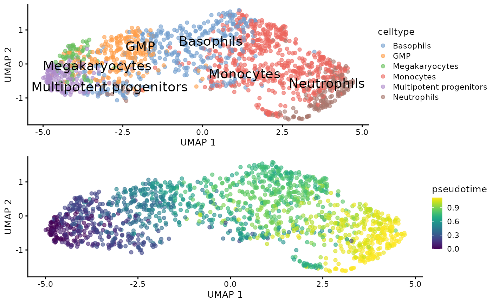
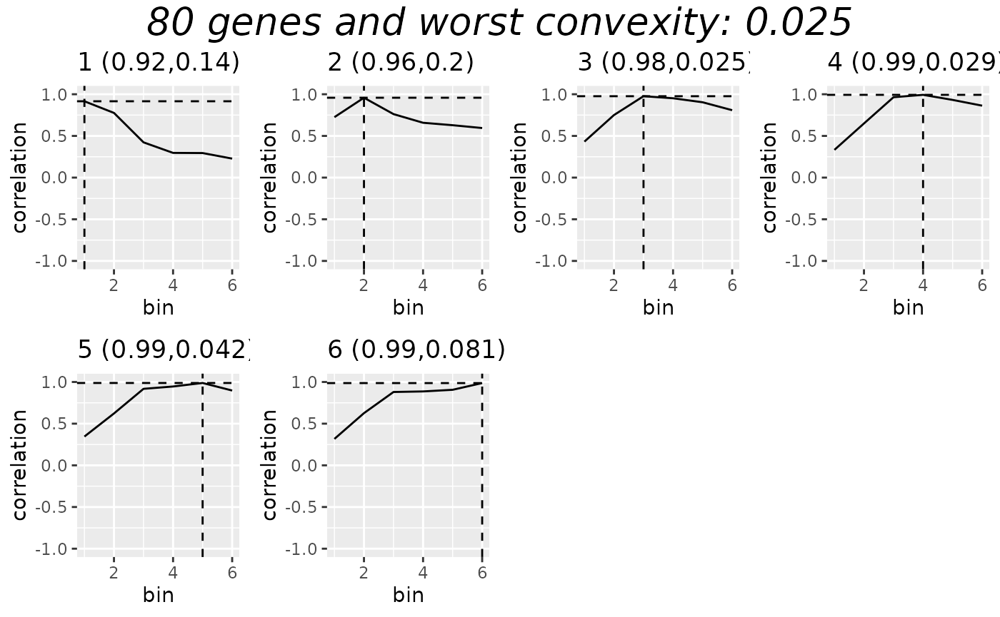
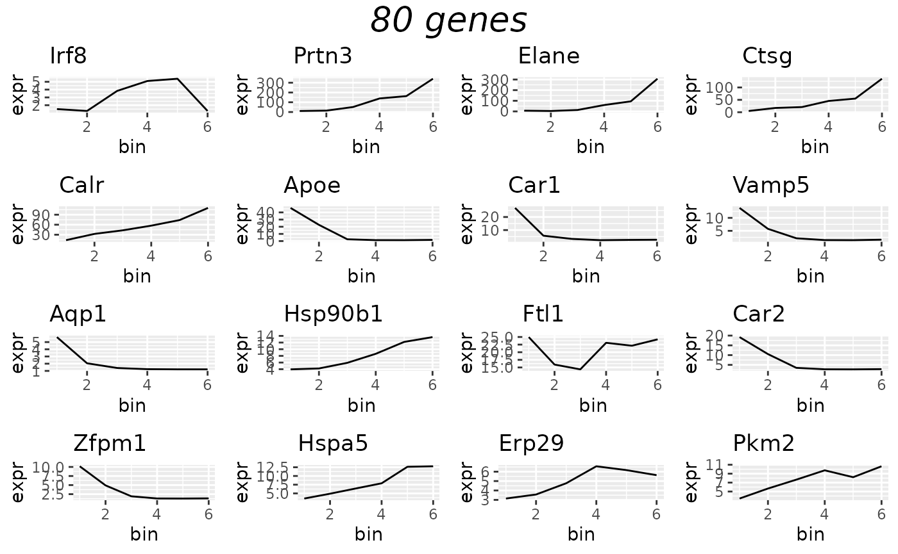
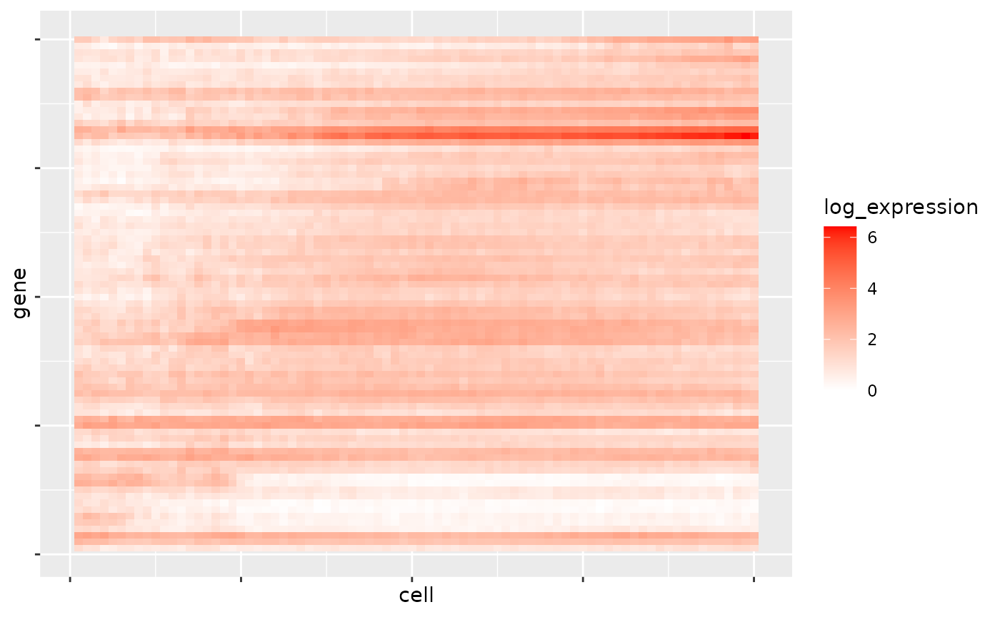
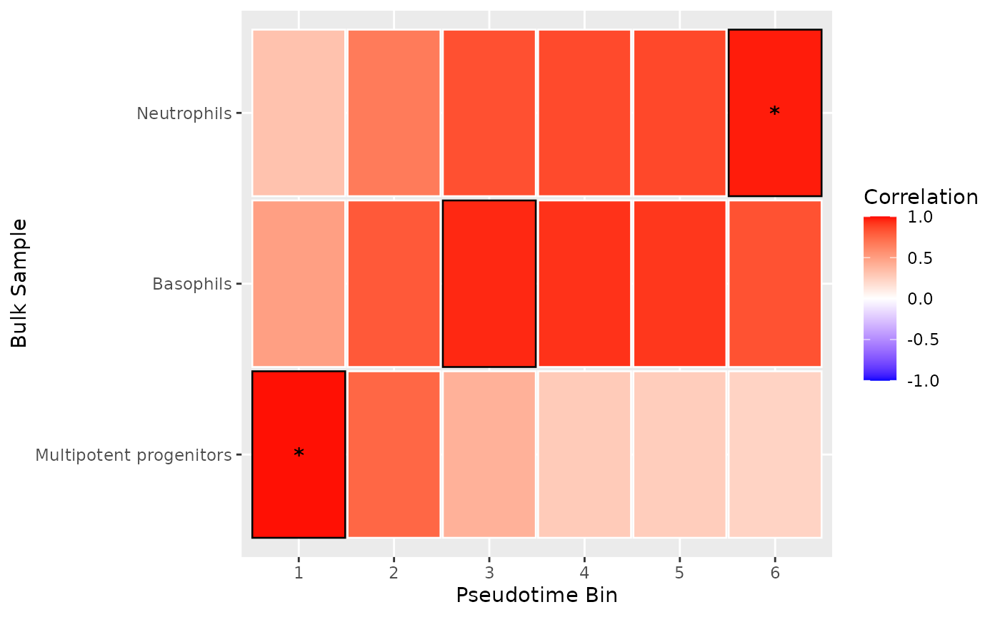
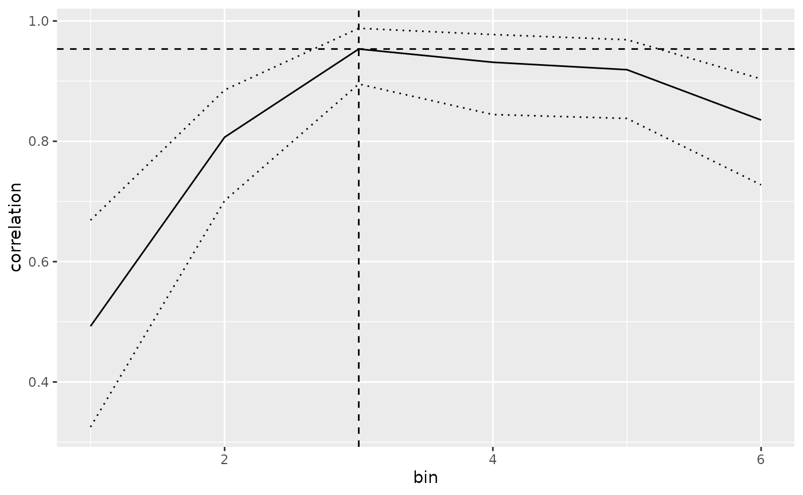

Assigning bulk RNA-seq to pseudotime
assign-bulk-to-pseudotime.Rmd
library(blase)
library(SingleCellExperiment)
library(tradeSeq)
library(slingshot)
library(scran)
library(scater)
library(BiocParallel)
library(ami)
RNGversion("3.5.0")
#> Warning in RNGkind("Mersenne-Twister", "Inversion", "Rounding"): non-uniform
#> 'Rounding' sampler used
SEED = 7
set.seed(SEED)
N_CORES = 4
if (ami::using_ci()) {
N_CORES = 2
}In this vignette, we will use BLASE to try to assign bulk RNA-seq samples to the pseudotime trajectory in a scRNA-seq data. We need to have the following to use Blase in this case:
- A Single Cell Experiment with pseudotime.
- A list of genes that explain the trajectory well, in this case
generated by tradeSeq’s
fitGAMandassociationTest
Setting up the Single Cell Experiment
First, let’s generate a Single Cell Experiment to use the tool with, based on the tradeSeq vignette.
data(countMatrix, package = "tradeSeq")
counts <- as.matrix(countMatrix)
rm(countMatrix)
data(crv, package = "tradeSeq")
data(celltype, package = "tradeSeq")
pseudotime <- slingPseudotime(crv, na = FALSE)
cellWeights <- slingCurveWeights(crv)
sce <- fitGAM(counts = counts, pseudotime = pseudotime, cellWeights = cellWeights,
nknots = 6, verbose = FALSE, BPPARAM=MulticoreParam(N_CORES))
sce$pseudotime = pseudotime[,"curve1"]
sce$celltype = celltype
sce = subset(sce, , celltype != 'Erythrocyte')
#sce <- computeSumFactors(sce, clusters=quickCluster(sce))
sce <- computeSumFactors(sce)
sce <- logNormCounts(sce)
normcounts(sce) <- exp(logcounts(sce))
sce = runUMAP(sce)
gridExtra::grid.arrange(
plotUMAP(sce, text_by="celltype", colour_by="celltype"),
plotUMAP(sce, colour_by="pseudotime"),
ncol=1
)
Finding the most descriptive genes with tradeSeq
Now we’ll find the genes we want to use. We select the top 200 so that we can do some parameter tuning below.
# Use consecutive for genes that change over time
assoRes = associationTest(sce, lineages=T, global=F, contrastType="consecutive")
genelist = blase::get_top_n_genes(assoRes, n_genes = 200, lineage = 1)Parameter Tuning for BLASE
When using BLASE, it can be a good idea to tune the number of genes and bins used.
- Too few genes can lead to poor fitting
- Too many genes can lead to slower execution, without any benefit, as the less informative genes still need to be checked.
- Too few bins can oversimplify the trajectory
- Too many bins can lead to too few cells being available for reliable values.
We can do this using the following commands, provided by BLASE:
res = blase::find_best_params(sce, genelist, split_by="pseudotime_range", pseudotime_slot="pseudotime")
blase::plot_find_best_params_results(res)It looks like 80 genes and 10 bins will give us good specificity, but let’s double check. In a non trivial dataset, this may take some repetition. We ignore the 5 bin result because this might not be enough resolution - this depends on your dataset. In general, more bins will reduce specificity because each bin will have a more similar cell composition. In general, aim for about as many bins as you have clusters.
Inspect Bin Choice
Now we can check if this is a good fit by showing how other bins from the SC dataset map using these genes. Ideally, each bin is very specific, with a high “worst specificity”.
blase_data = as.BlaseData(sce, pseudotime_slot="pseudotime", n_bins=10)
blase_data@genes = genelist[1:80]
evaluate_parameters(blase_data, make_plot = TRUE)
#> [1] 0.03540000 0.08531667Inspect Genes Choice
We can also see how the genes change over pseudotime, by: 1. Using a fourier transformation to find the phase of the peak of a gene’s expression (see Bozdech) 2. Plotting expression in cells over pseudotime, and genes ordered by their phase in pseudotime.
We can see that the genes do not appear to especially differentially expressed over pseudotime, but this is just a heuristic, so we will move on to see how they perform.
waves = get_waves(sce, pseudotime_slot="pseudotime")
gene_selection_matrix(sce, waves, pseudotime_slot="pseudotime", target_matrix_size=length(blase_data@genes))
gene_selection_matrix(sce, waves, pseudotime_slot="pseudotime", genes=blase_data@genes, target_matrix_size=length(blase_data@genes))
You can also inspect how the top genes change over each pseudotime bin:
evaluate_top_n_genes(blase_data)
Mapping Bulk Samples to SC with BLASE
If we’re happy, now we can try to map a bulk sample onto the single cell. We’ll do this by pseudobulking cell types in the SingleCellExperiment but in reality you should use a real bulk dataset. See some of our other articles for examples.
bulks_df = DataFrame(row.names = rownames(counts(sce)))
for (type in unique(sce$celltype)) {
bulks_df = cbind(bulks_df, rowSums(normcounts(subset(sce, , celltype==type))))
}
colnames(bulks_df) = unique(sce$celltype)
multipotent_progenitors_result = map_best_bin(blase_data, "Multipotent progenitors", bulks_df)
multipotent_progenitors_result
#> MappingResult for 'Multipotent progenitors': best_bin=1 correlation=0.993670886075949 top_2_distance=0.1767
#> Confident Result: TRUE (next max upper 0.831997187060478 )
#> with history for scores against 6 bins
#> Bootstrapped with 200 iterations
basophils_result = map_best_bin(blase_data, "Basophils", bulks_df)
basophils_result
#> MappingResult for 'Basophils': best_bin=4 correlation=0.949554617909048 top_2_distance=0.0038
#> Confident Result: FALSE (next max upper 0.95042194092827 )
#> with history for scores against 6 bins
#> Bootstrapped with 200 iterations
neutrophils_result = map_best_bin(blase_data, "Neutrophils", bulks_df)
neutrophils_result
#> MappingResult for 'Neutrophils': best_bin=6 correlation=0.980684481950305 top_2_distance=0.1019
#> Confident Result: TRUE (next max upper 0.89943741209564 )
#> with history for scores against 6 bins
#> Bootstrapped with 200 iterationsPlotting Heatmap of Mappings
To see how well we plotted the differences between these cell types, we can plot a heatmap of all these results. The neutrophils and Erythrocytes are confidently mapped, but the GMP population doesn’t map as well.
plot_mapping_result_heatmap(list(
multipotent_progenitors_result,
basophils_result,
neutrophils_result))
Plotting Detailed Correlation Maps
To look into the GMP mapping, we can plot the correlation over each bin. Because the the lower boundary of the best selection (bin 3) is higher than the higher bounds of the next-best bin (bin 4), BLASE makes a confident call.
plot_mapping_result_corr(basophils_result)
Plotting Summary Plots of Mappings
Now we can do some more detailed plotting about where the bins mapped onto the Single Cell data, and the cell type proportions we expect , but we need to add the pseudotime bins to the metadata of the SCE. We can see that the true proportions of cell types in the mapped bin do indeed map to the cell type we expect.
binned_sce = assign_pseudotime_bins(sce, split_by="pseudotime_range", n_bins=10, pseudotime_slot="pseudotime")
plot_mapping_result(binned_sce, multipotent_progenitors_result, group_by_slot="celltype")To view the bin population chart in full, use:
plot_bin_population(binned_sce, 1, group_by_slot="celltype")We can see here that both of these bins have high proportions of the GMP cell type, which is why Blase could not make a convincing call on either of these being the true “best” mapping. In this case, since Bin 3 has a larger proportion and number of GMP cells, it is likely the best mapping, and this is reflected in Blase’s correlation score.
Session Info
sessionInfo()
#> R version 4.4.0 (2024-04-24)
#> Platform: x86_64-pc-linux-gnu
#> Running under: Ubuntu 22.04.4 LTS
#>
#> Matrix products: default
#> BLAS: /usr/lib/x86_64-linux-gnu/openblas-pthread/libblas.so.3
#> LAPACK: /usr/lib/x86_64-linux-gnu/openblas-pthread/libopenblasp-r0.3.20.so; LAPACK version 3.10.0
#>
#> Random number generation:
#> RNG: Mersenne-Twister
#> Normal: Inversion
#> Sample: Rounding
#>
#> locale:
#> [1] LC_CTYPE=C.UTF-8 LC_NUMERIC=C LC_TIME=C.UTF-8
#> [4] LC_COLLATE=C.UTF-8 LC_MONETARY=C.UTF-8 LC_MESSAGES=C.UTF-8
#> [7] LC_PAPER=C.UTF-8 LC_NAME=C LC_ADDRESS=C
#> [10] LC_TELEPHONE=C LC_MEASUREMENT=C.UTF-8 LC_IDENTIFICATION=C
#>
#> time zone: UTC
#> tzcode source: system (glibc)
#>
#> attached base packages:
#> [1] stats4 stats graphics grDevices utils datasets methods
#> [8] base
#>
#> other attached packages:
#> [1] ami_0.1.0 BiocParallel_1.38.0
#> [3] scater_1.32.0 ggplot2_3.5.1
#> [5] scran_1.32.0 scuttle_1.14.0
#> [7] slingshot_2.12.0 TrajectoryUtils_1.12.0
#> [9] princurve_2.1.6 tradeSeq_1.18.0
#> [11] SingleCellExperiment_1.26.0 SummarizedExperiment_1.34.0
#> [13] Biobase_2.64.0 GenomicRanges_1.56.0
#> [15] GenomeInfoDb_1.40.0 IRanges_2.38.0
#> [17] S4Vectors_0.42.0 BiocGenerics_0.50.0
#> [19] MatrixGenerics_1.16.0 matrixStats_1.3.0
#> [21] blase_0.0.0.9000
#>
#> loaded via a namespace (and not attached):
#> [1] pbapply_1.7-2 gridExtra_2.3
#> [3] rlang_1.1.3 magrittr_2.0.3
#> [5] compiler_4.4.0 mgcv_1.9-1
#> [7] DelayedMatrixStats_1.26.0 reshape2_1.4.4
#> [9] systemfonts_1.0.6 vctrs_0.6.5
#> [11] stringr_1.5.1 pkgconfig_2.0.3
#> [13] crayon_1.5.2 fastmap_1.1.1
#> [15] backports_1.4.1 XVector_0.44.0
#> [17] labeling_0.4.3 utf8_1.2.4
#> [19] rmarkdown_2.26 UCSC.utils_1.0.0
#> [21] ggbeeswarm_0.7.2 ragg_1.3.1
#> [23] purrr_1.0.2 bluster_1.14.0
#> [25] xfun_0.43 zlibbioc_1.50.0
#> [27] cachem_1.0.8 beachmat_2.20.0
#> [29] jsonlite_1.8.8 highr_0.10
#> [31] DelayedArray_0.30.1 cluster_2.1.6
#> [33] irlba_2.3.5.1 parallel_4.4.0
#> [35] R6_2.5.1 stringi_1.8.4
#> [37] bslib_0.7.0 RColorBrewer_1.1-3
#> [39] limma_3.60.0 jquerylib_0.1.4
#> [41] Rcpp_1.0.12 knitr_1.46
#> [43] FNN_1.1.4 Matrix_1.7-0
#> [45] splines_4.4.0 igraph_2.0.3
#> [47] tidyselect_1.2.1 abind_1.4-5
#> [49] yaml_2.3.8 viridis_0.6.5
#> [51] codetools_0.2-20 plyr_1.8.9
#> [53] lattice_0.22-6 tibble_3.2.1
#> [55] withr_3.0.0 evaluate_0.23
#> [57] desc_1.4.3 pillar_1.9.0
#> [59] checkmate_2.3.1 generics_0.1.3
#> [61] metR_0.15.0 sparseMatrixStats_1.16.0
#> [63] munsell_0.5.1 scales_1.3.0
#> [65] glue_1.7.0 metapod_1.12.0
#> [67] tools_4.4.0 BiocNeighbors_1.22.0
#> [69] data.table_1.15.4 ScaledMatrix_1.12.0
#> [71] locfit_1.5-9.9 fs_1.6.4
#> [73] cowplot_1.1.3 grid_4.4.0
#> [75] edgeR_4.2.0 colorspace_2.1-0
#> [77] nlme_3.1-164 GenomeInfoDbData_1.2.12
#> [79] beeswarm_0.4.0 BiocSingular_1.20.0
#> [81] vipor_0.4.7 cli_3.6.2
#> [83] rsvd_1.0.5 textshaping_0.3.7
#> [85] fansi_1.0.6 S4Arrays_1.4.0
#> [87] viridisLite_0.4.2 dplyr_1.1.4
#> [89] uwot_0.2.2 gtable_0.3.5
#> [91] sass_0.4.9 digest_0.6.35
#> [93] dqrng_0.3.2 SparseArray_1.4.3
#> [95] ggrepel_0.9.5 farver_2.1.1
#> [97] htmlwidgets_1.6.4 memoise_2.0.1
#> [99] htmltools_0.5.8.1 pkgdown_2.0.9
#> [101] lifecycle_1.0.4 httr_1.4.7
#> [103] statmod_1.5.0